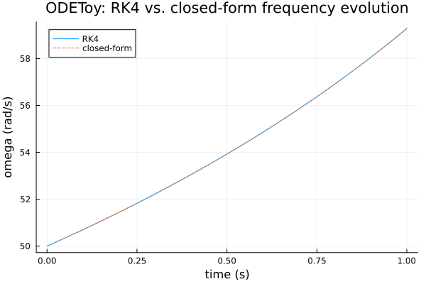
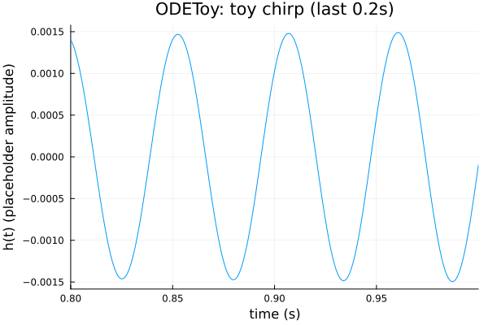

ODE-Integrated Toy Model: ODEToy
TaylorT3 evaluates a closed-form PN series directly. Not every waveform family has a closed form — effective-one-body (EOB) models, in particular, are defined by numerically integrating an ODE for the orbital dynamics. ODEToy is not a physically useful waveform (see its own module docstring): it's an architecture scaffold that validates the pattern this package's future EOB-track models will reuse — a StaticArrays-based state type, a fixed-step, allocation-free RK4 integrator, and (exercised in test/odetoy_enzyme_ka_tests.jl, not covered here) that the whole thing differentiates through Enzyme.jl and compiles inside a KernelAbstractions.jl GPU kernel. The physics itself is deliberately the simplest possible chirping system: 0PN (leading-order), non-spinning, circular-orbit inspiral.
using GravitationalWaveforms, Plots
gr()Plots.GRBackend()The ODE and its closed-form check
The physics (domega/dt = (96/5)*Mc^{5/3}*omega^{11/3}, dphi/dt = omega, both in geometric units) is simple enough to have a closed-form solution, odetoy_omega_analytic — which exists purely as an independent correctness check on the RK4 integrator, odetoy_rk4_integrate:
mc, omega0 = 20.0, 50.0 # solar masses, rad/s
validate_odetoy_params(mc, omega0)
Mc_sec = mc * GravitationalWaveforms.GMsun_over_c3 # chirp mass in seconds, geometric units
dt = 1.0 / 4096.00.000244140625Each n here is integrated independently from t=0 (see ODEToy's docstring: "not optimized for dense trajectory output") – an O(n^2) cost overall, so this comparison uses a coarse stride rather than every single step.
n_check = collect(0:16:4096) # 1 second, every 16th step
t_check = n_check .* dt
omega_rk4 = [odetoy_rk4_integrate(ODEToyState(0.0, omega0), dt, ni, Mc_sec).omega for ni in n_check]
omega_analytic = odetoy_omega_analytic.(t_check, omega0, Mc_sec)
plot(t_check, [omega_rk4 omega_analytic]; label=["RK4" "closed-form"], linestyle=[:solid :dash],
xlabel="time (s)", ylabel="omega (rad/s)", title="ODEToy: RK4 vs. closed-form frequency evolution")
maximum(abs.(omega_rk4 .- omega_analytic) ./ omega_analytic)2.0663518887081123e-15Agreement at essentially machine precision, at dt = 1/4096 s over up to a second of integration — exactly the kind of independent-method cross-check this package leans on throughout, here checking the integrator itself rather than a physics model.
Phi/Ampl: step count, not time, as the domain variable
Unlike every other model in this package, ODEToy's Phi/Ampl take an integer step count n, not a continuous time or frequency (see Conventions) — a fixed-step integrator only naturally produces states at multiples of dt:
n = collect(0:4096) # 1 second of steps, dense (same O(n^2) caveat as above, kept small)
t = n .* dt
phi = Phi(ODEToy(), n, mc, omega0; dt=dt)
amp = Ampl(ODEToy(), n, mc, omega0, 1.0; dt=dt) # Ampl here is a placeholder, not physical -- see its docstring
h = @. -amp * cos(phi)
plot(t, h; xlims=(0.8, 1.0), legend=false,
xlabel="time (s)", ylabel="h(t) (placeholder amplitude)", title="ODEToy: toy chirp (last 0.2s)")
The chirp shape is qualitatively right (frequency visibly increasing, same 0PN physics TaylorT3 includes as its leading term) but, as Ampl's docstring stresses, its amplitude has no real PN derivation behind it — don't use ODEToy for anything beyond exercising the ODE-integration/autodiff/GPU-kernel architecture pattern it exists to validate.
Next, and last: the capstone tutorial puts every model from this series side by side on one GW150914-like system, as a practical "which model do I actually want" reference.
This page was generated using Literate.jl.